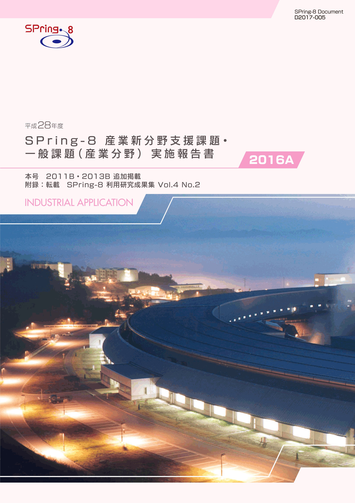
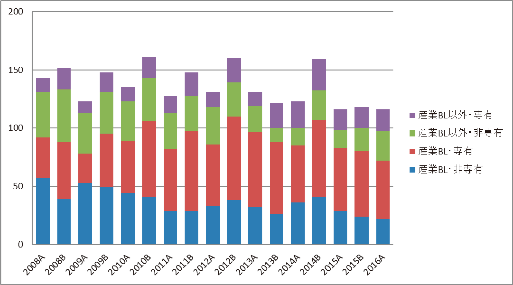

1. はじめに2. 課題募集制度の概要
3. 成果公開の考え方
4. 実施状況
5. 産業利用分野の利用動向と課題
6. 報告書
* 送付を希望される方は、連絡先（氏名、所属、〒住所、E-mail）をご記入の上、 事務局 support@spring8.or.jp までE-mailでご連絡ください。
平成 26 年度（2014A 期）より新たな領域指定型重点課題として、これまで放射光利用が少なかった産業分野の SPring-8 利用の拡大を目指して産業新分野支援課題の募集を開始した。本報告書は 2016A 期の産業利用分野における課題実施状況の報告を目的として、同利用期に実施した一般課題（産業利用分野）と産業新分野支援課題のうち SPring-8 利用研究成果集としての審査を行わなかった課題の報告書を収録したものである。
- 一般課題（産業利用分野）
一般課題（産業利用分野）の課題とは、課題申請の際に産業利用分野（I）での課題審査を希望した成果非専有の一般課題（課題審査は課題審査委員会産業利用分科会が行う）である。これまでは一般課題（産業利用分野）への申請は、申請者の所属機関を問わずに認めていたが、2015A 期からは実験責任者もしくは共同実験者に民間企業もしくは、それに準じる機関に所属する者が含まれていることを申請要件とした。民間企業に準ずる機関とは、民間企業からの委託による試験・研究・開発を事業に含んでいる機関と定義している。また、地方自治体が設置している公設置試験場や地方独立行政法人等（○○県工業技術センター）は、民間企業に準ずる機関から除外している。なお、民間企業に所属する者が産業利用分野以外の分野に申請した課題は一般課題（産業利用分野）としては扱わない。一般課題（産業利用分野）の募集は他分野の一般課題と同様に、年 2 回の課題募集期間において全ての共用ビームラインへの申請が可能である。一般課題（産業利用分野）に特徴的な制度は以下の 6 項目である。
a） 産業利用ビームライン I（BL19B2）、II（BL14B2）、III（BL46XU）は半期ごとに前半を 1 期、後半を 2 期とした 2 回の課題募集を行う（年 4 回課題募集を実施）。1 期と 2 期の両方で利用実験を行いたい場合は、継続的な研究内容の課題であってもその都度、新規課題として応募することが必要である。なお2013A 期よりこれらのビームラインでは成果非専有の一般課題は、審査希望分野が産業利用分野である一般課題（産業利用分野）のみとした。これらのビ ームラインを指定した申請であるものの、審査希望分野が他分野の課題は申請者の希望にかかわらず産業利用分野で審査する。
b） 新規利用拡大の観点から課題審査において利用経験を考慮する。
c） 民間企業利用拡大の観点から課題審査において所属機関を考慮する。
d） 課題実施後約 2～4 か月以内に所定の書式の産業利用課題実施報告書を提出する。なお、この報告書は SPring-8 利用研究成果集として審査を受けることも可能である。
e） 全採択課題に担当コーディネーターを配置する。
f） 科学技術的妥当性に関する審査は
（1) 産業基盤技術としての重要性および発展 性
（2) 社会的意義および社会経済への寄与度の観点を重視して実施する
に重点をおいて実施する。
- 産業新分野支援課題
「産業新分野支援課題」を領域指定型の重点研究課題として、平成 25 年 9 月 24 日に指定した。その狙いは以下のとおりである。
これまでの産業利用促進の取り組みにより、一部の産業分野では SPring-8 の放射光利用が普及した一方、経済のグローバル化を反映して国内の産業構造も大きく変化し、新しい産業の創生をもたらすような研究開発が必要になっている。そこで、新産業分野の研究開
発を促進するため、SPring-8 で放射光利用に新規に取り組む産業分野の課題に重点的な支援を行う産業新分野支援課題を実施する。
2-1） 募集の対象
課題の目的に沿って、SPring-8 での放射光利用実績の少ない産業分野の研究開発に関する課題を募集の対象とする。該当する産業分野の例として食品･食品加工、農林水産物、建設資材、金属加工、鉱物資源が挙げられるが、この限りではない。例示された分野に該当しない場合は、課題申請の際に放射光利用実績の少ない産業分野であることの説明が求められる。なお、一般課題（産業利用分野）のような実験責任者及び共同実験者の所属機関に関する要件は設定しない。
2-2） 対象ビームライン、シフト数割合、及び募集
産業利用ビームライン I（BL19B2）、II（BL14B2）、III（BL46XU）を対象に、ユーザ ー実験に供するビームタイムのうち 20%以内（施設留保を含めたユーザータイムの 16%以内）を配分する。
募集は一般課題と同時期に半期 2 回行う。なお、1 期募集において採択された通期課題の 2 期分のシフト数も含めた合計シフト数が半期を通じたビームタイムの上限に達した場合は 2 期に募集を行わない。
2-3） 通期課題
1 期、2 期の両方で利用実験を行いたい場合は、その都度新規課題としての応募が必要であるが、継続的･計画的な実施により一層の成果創出が期待される課題は、“通期課題”とし 1 期応募の折に 2 期分のシフト数も含めた申請を受付ける。なお、2 期は通期課題の募集は行わない。
2-4） 審査
一般課題（産業利用分野）に先んじて課題審査委員会産業利用分科会が審査を行う。なお、産業新分野支援課題として不採択となった課題は、自動的に一般課題（産業利用分野）の課題として、他の一般課題と一緒に改めて審査される。産業新分野支援課題においては一般課題（産業利用分野）の観点に加えて研究対象が SPring-8での放射光利用の新規な産業分野に該当するかどうかも含めて審査する。
2-5） 報告
WEB より提出するビームタイム利用報告書、利用実験課題報告書に加えて課題実施後約 2～3 か月以内に所定の書式の産業新分野課題実施報告書を提出する。なお、この報告書は SPring-8 利用研究成果集として審査を受けることも可能である。
成果の公開については、産業新分野支援課題、一般課題（産業利用分野）ともに他の成果非有の一般課題と同様に学術誌上への論文掲載（博士論文も含む）もしくはSPring-8 利用研究成果集への採録による成果公開が求められる。この産業利用課題実施報告書及び産業新分野支援課題実施報告書の提出は成果の公開とは認定されないが、これらの報告書は著者からの申し出により SPring-8 利用研究成果集としての審査を受けることが可能である。SPring-8 利用研究成果集としての審査を受けない実施報告書は、JASRI コーディネーター等による校閲を経て課題実施期が終了して約 6 か月後に出版･公開されるが、それ以外は SPring-8 利用研究成果集としての審査終了後に公開される。
なお、平成 28 年度 2016A 期の一般課題（産業利用分野）及び産業新分野支援課題の実施報告は、平成 29 年 8 月末に開催予定の「第 14 回 SPring-8 産業利用報告会」等で口頭及びポスター形式での報告を予定している。
以下に平成 28 年度 2016A 期の産業新分野支援課題、及び一般課題（産業利用分野）の応募・採択結果を表 1、表 2 にまとめる。
- 応募・採択結果 産業新分野支援課題
表 1．応募時期及び研究機関別課題応募・採択結果
*産業新分野支援課題で不採択となり、一般課題として再審査され採択された課題は採択数から除外している。また、第 2 期追加募集で申請、採択となった 1 件を第 2 期分に含めている。募集時期 機関分類 応募数採択数＊採択率（%）第1期募集学官5360.0産業界3266.7合計8562.5第2期募集学官5480.0産業界3266.7合計8675.0総計161168.8
産業新分野支援課題の応募数、採択数は直前の 2015B 期よりも少なくなってるが、第 1,2 期ともに前年同期の 2015A 期とほぼ同じである。このように応募数の増減には季節要因が濃厚であるため、長期的動向の検討が必要と思われる。なお、BL19B2 は2016A 第 2 期に採択課題に配分されたビームタイムが供給予定ビームタイムよりも少なく追加募集を行った。追加募集には産業界から 1 件が申請され、採択されている。産業新分野支援課題で採択される課題の多くは食品加工に関する課題であり、残りは資源開発に分類される課題である。食品加工分野の拡大は産業新分野支援課題の実施と並行して行ったマイクロビーム回折などの利用技術開発の効果と考えている。
- 応募・採択結果 一般課題（産業利用分野）
表2．応募時期及び研究機関別一般課題応募・採択結果
*応募数には産業新分野支援課題で不採択となり、一般課題として再審査された課題（1 期採択なし、2 期 学官 1）。また、採択後に 12 条課題に分類される JASRI 職員から申請された課題を応募数（1 期 4課題、2 期 4課題 追加募集 1）、採択数（1 期 4 課題、2 期 4 課題 追加募集 0）を除く。一般課題と同時に審査される大学院生提案型課題の応募数（1 期 11 課題、2 期 8課題）、採択数（1 期 11 課題、2 期 5 課題）を除く。BL19B2 を対象に行った A2 期追加募集の応募数（産業界 2,学官 5）,採択数(産業界 1、学官 3) を含む。募集時期 機関分類 応募数＊採択数採択率（%）第1期募集 学官403485.0産業界292586.2合計695985.5第2期募集 学官242083.3産業界10660.0合計342676.5総計1038582.5
一般課題（産業利用分野）も産業新分野支援課題と同様、応募数課題は 2015A 期並みの 103 課題であったが、配分シフト数が多かったため採択課題数、採択率ともに 2015A期より 10％以上高くなった。産業界が実験責任者として申請された課題の第 2 期の採択率が著しく低いことも 2015A 期と同様である。不採択になる産業界の課題は BL14B2に多いことから XAFS に対する産業界のニーズが高いことを示すものであるが、課題内容が十分に検討されていない申請の割合も高いものと考えられる。産業界の XAFS利用希望者への一層の課題申請支援が求められている。
BL19B2 は 2016A 第 2 期で採択された課題（不採択になった課題あり）に配分するシフト数が募集シフト数に満たず追加募集を行った。不採択となった 12 条課題 1 課題と採択された産業新分野支援課題 1 課題を含めた全審査課題の採択率は 55.5%で新年度が始まる前の H27 年 3 月 31 日に募集を締め切った第 2 期募集の BL19B2 の全審査課題の採択率 88.9%よりも著しく低い。この結果は課題募集期間が利用者の要望を満たしていないことの現れであり、何等かの改善が必要であることを示す結果と考えている。
- SPring-8利用研究成果集としての審査
前記のとおり 2011B 期より成果公開の扱いが変更になったため、実験責任者の希望に応じ
て重点産業利用報告書を SPring-8 利用研究成果集（現在は SPring-8/SACLA 利用研究成果集）として査読審査を受けて公開文書として扱うことも可能とした。産業新分野支援課題及び産
業利用分野の一般課題も同様で、SPring-8/SACLA 利用研究成果集として審査を受ける公開文書とすることができる。SPring-8/SACLA 利用研究成果集への公開は査読審査が終了し成果審査委員会での承認後となるため、SPring-8/SACLA 利用研究成果集に投稿予定の課題は採録していない。
-
2016A 期に実施され全共同利用研究課題 738 課題のうち、民間企業等の産業界に所属する利用者が実験責任者であった課題は 116 課題で、全体に占める割合は 15.7%と非常に低い値とな った。2015A 期の産業界による実施課題は 2016A 期と全く同じ 116 課題である一方、全体に占める割合は 17.2%であった。産業界課題の実施割合の低下は 2016A 期は 2015A 期よりも供給ビ ームタイムが長く、産業界以外の課題が増加したことが原因と考えている。
産業利用ビームラインが現在の3 本体制になった2008A 期以降の産業界課題の実施数推移を図 1 に示す。2013 年を除いて毎年 A 期よりも B 期の方が実施数が多く、年度後半の方が需要が高いことがわかる（B 期の実施課題数が少ない 2013, 2015 年は 1-3 月に蓄積リングの運転が無かったことが原因と考えられる）。このように現在の課題募集制度は産業界の利用者のニーズに十分に応えられていないため、半期 3 回募集など産業界利用者の要望に対応する制度の導入を検討することが必要と思われる。
一方、2013 年までは減少傾向にあった産業利用 BL 以外での成果非専有課題が若干増加する傾向が見られる。これは産業界による放射光利用技術の多様化に向けた兆しと考えている。

図1. 共同利用実験として実施された産業界課題の実施数推移
SPring-8利用研究成果集 Vol 4 No.2 （http://user.spring8.or.jp/resrep/?cat=22）
連絡先（氏名、所属、〒住所、E-mail）をご記入の上、事務局 support@spring8.or.jp までE-mailでご連絡ください。